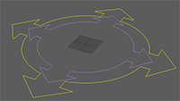
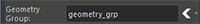

A Base node is at the root of every rig.
The base
node creates the master ctrls that move the entire rig, which is why all connections lead to
it.
Each character should have only one Base node.

Attributes:
- 'Ctrls
Scale' - Scale all the node ctrls. Note that the
attachments 'Ctrls
Settings' and 'CtrlsShape' will override
this. [Video]
- 'Expose
RotateOrder' - Exposes all the ctrls 'RotateOrder' attribute in the Channel Box. [Video]
- 'Skinning Joint' -
If checked, the 'Base' joint will be tagged as a skinning joint, which is necessary for attachments like
'FollowSkeleton' to operate
correctly.
- 'Joints
Visibility' - The base node controls the visibility of all the joints from all the
nodes connected to it.
Selecting the 'base_ctrl' and changing its 'Joints Visibility' attribute does the same thing as changing this
value.
- 'Geometry
Display'- Add a dropdown attribute to 'base_ctrl' called 'Geometry Display' with these options:
- 'Normal': Character meshes can be
selected.
- 'Template': Character meshes are not
selectable and appear as gray wireframes.
- 'Reference': Character meshes are not
selectable, but they appear normal.
The next attribute,
'Geometry Group', will also need to be set up in order for this to work.
- 'Geometry
Group' - Specify the group under which the character meshes are located.
You can select the group and press the arrow button to the right of the
attribute instead of typing the group's name.
When you hover over
the * indicator, you'll see tooltip information
about whether the name is a valid transform.
It is best to parent the
character meshes under 'rig_root_grp'|'geometry_grp'.

- 'Display
Value' - Select the value for 'Geometry
Display'.
_____________________________________________
Get Arise at: https://www.ariserigging.com